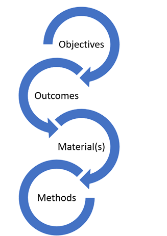

GDSP SoW guide
Guide for scoping and filling out the statement of work.
Overview
Word and pdf versions of the guide are also available.
GDSP SoW goal
The aim of this document is to ensure the right business and scientific questions are addressed, the right analyses (if any) are planned to address those questions, and to assess the necessary materials and resources required to execute the project (“CRISP-DM” 2024). This is the practice of scoping.
Scoping is the task of problem formulation; to capture and clarify key information such as:
- the background of the request,
- what gap the project is trying to address,
- what has been done before,
- identifying previous or ongoing projects (and potentially make use of existing materials and knowledge, or make connections to those projects),
- an outline of the key analytical activities (i.e. design, planning, data discovery, background review, etc.)
- And any other information that could be important for formulating both the analytical questions and solution strategies
Scoping helps define that the right scientific and business questions are addressed and that the right data science activities will be planned and executed to address them. Scoping is neither a regulatory nor a mandatory requirement for exploratory investigations. However, it is key to good scientific practice and sound resource management. The need for scoping recognizes that data science projects have a strong exploratory component (i.e., scoping is never ‘final’) and that project scope is often wide and may involve integration of information across studies, drug programs, or diseases, as well as integration of expertise and perspectives.
SoW output
The main output from this task is to provide a brief written description of the problem, the questions to be addressed, the activities to address them, and who was involved in this assessment. Ideally, the GDSP SOW should be stored on a knowledge management system, with the location of the document captured in a tracker aligned with good documentation practices.
Accountability, responsibility & consultation
Project and SoW Accountability lies with the organization’s/department’s leadership team that governs the (time & work) of the project’s members. The responsibility is with the project lead having the relevant expertise to run the project.
Background and context
The aim of the GDSP SOW is to encourage teams to do disciplined research prior to commencing exploratory work; to ensure the project matches the needs of underlying questions and business decisions (i.e. the purpose).

The iterative steps of project scoping:
- Objectives – capture, define and refine the goal and objective(s) of the project.
- Outcomes – capture what actions, decisions or interventions will the outcome of the project inform.
- Materials – what data and other resources are required to achieve these goals.
- Methods – What analyses need to be performed? What analysis type(s) and strategies are required (describe, detection, prediction, intervention, explanation? (Hernán, Hsu, and Healy 2019).
Exploratory work without clear objectives runs the risk of converging to a confusing cycle: exploration generates new ideas. These ideas then generate further explorations, and on this cycle goes indefinitely, often leaving project teams confused with this lack of clarity.
What can make matters worse is that, if there was no business justification in the first place, the team may realize (after the fact) that the results have no impact.
Scoping is the task of understanding, from a scientific and business perspective, what the investigation really wants to accomplish. Often there may be many competing objectives and constraints that must be properly balanced. The goal is to uncover important factors at the beginning of the project that can influence the outcome. A likely consequence of neglecting this step would be to expend a great deal of effort producing the correct answers to the wrong questions.
There are many approaches to scoping a problem, here is only one approach. The GDSP SOW process is designed to be problem centric, rather than being focused first on solutions i.e. data/model/methodology. The rationale is to first define the scientific problem and the potential value before exploring the solution space.
It should also be recognised that scoping is iterative - the project scope for an exploratory investigation may be refined both by the initial scoping process as well as during the project as more information is obtained.
Filling out the SoW
Project information
Capture and record key project metadata i.e., requestor, development unit, date, etc. The underlying principle for recording key project metadata is to capture sufficient information to provide an overview of the request, as well as seed further scoping, design, and planning if the project initiates, as well as provide an initial capture of what information is currently known.
The aim is to record the project overview, providing necessary context for understanding, and to support retrieval of project information later (by yourself or others).
The captured information can be used in subsequent documents and activities such as the set-up of project repositories (i.e., readme files), as well as form the seed of future analysis plans and project reports.
Project title
Provide a descriptive title for the project. Where possible add keywords to the title that would help support the understanding and retrieval of the project at a future date, especially by others who may not be familiar with the project but may benefit from the project outcomes (including data, code, methods, results, etc.).
For example, take the following title:
- Clinical trial summaries. By adding additional descriptive information to the title
- Project xyz: summarizing clinical trial baseline demographics for the ABC program using SOTA techniques
provides additional clarifying information, such as a project code (xyz), the associated program (ABC), specific information to be explored (baseline demographics), and the methodology applied (SOTA [state of the art] techniques). The principle here, is not that all aspects should be covered, but that sufficient detail is provided for future project discovery, retrieval, and re-use.
Project code / identifier (if applicable)
Add the project code or identifier if one exists. Ideally this would be a unique resource identifier that would be entered into a tracker and/or knowledge/ document management system. For example, a work or time & material related code, clinical study code, clinical program code, etc. The principle is to help support discovery and retrieval of the project and project outcomes later. ### Project requestor / sponsor (if applicable)
Add details of the requestor e.g. business unit. Who the project sponsor or stakeholder(s) are. Note, the requestor could be yourself. However, going through this exercise may be a useful exercise to clarify thinking prior to initiating a project of any scope.
GxP applicability?
Indicate if this work is purely exploratory (and for organization’s internal purposes) or if project outcomes may be subject to Health Authority (HA) interactions, part of a submission to a scientific publication, etc. The purpose is to help discussion and planning around potential verification and validation, especially to avoid rework later.
For purely exploratory work, provide appropriate indication of the level of verification & validation that will be undertaken when publishing and sharing outcomes (Kuemmel et al. 2020). If output is not formally reviewed or checked, consider using labels such as draft / exploratory, etc. to indicate this.
Project keywords
Provide keywords that may help with the retrieval or discovery of the project at a later point.
To aid keyword selection it may be helpful to answer the following questions:
- In which circumstance would I or others want to find this project?
- What phrases may be used to search or find this project (i.e. not a general single term).
- When and how will the outputs of this project be used?
Version and revision history (change log)
It is important to provide an audit trial of the revision history of the SOW, either manually using the change log, or through commenting as part of a version control system (i.e. git). This provides a record of any changes in project direction or scope. However, the change log provides an immediate, accessible, history of important and key project changes an update to all readers of the SOW.
A change log is provided in the SOW to handle changes or updates to the SOW.
Project purpose & background (i.e. business or scientific justification)
Provide an informal summary of the scientific/business context and what is known about the situation at the beginning of the project. Provide a rationale in terms of what is already known and what gaps exist (i.e. why this project is required). It is helpful to write down what is known at the start of the project. These details not only serve to identify the project goals but also serve to identify resources, both human and material, that may be used or required during the project.
Writing down the background and context also helps identify potential gaps in understanding.
The aim of this section is to describe but also ensure there is a common understanding of the problem the project is trying to solve and why you/your organization are doing it i.e. to capture the purpose, scientific context, business value and justification. Use this exercise to understand what is known about the problem and why we are doing it, and what has been done before, but also to identify gaps in information, assumptions, etc.
- Are there related ongoing or completed projects?
- Are there specific areas of expertise that will be required?
- etc.
The purpose reflects the overarching objective and should give an understanding of the need and potential value of the project. The purpose acts as the focal point of the investigation and provides clarity as to what that project is about, and why it is required, and what value it will bring to the organization. Thinking about what the project needs will also help make sure the project is relevant and will not be wasted time / resources i.e. has this work been done before?
Project objectives
Describe the primary objective, from a business or scientific perspective. In addition to the primary objective (i.e. key scientific question of interest), there are typically other related questions that may be of interest; the primary objective or question is potentially just one of several to support the purpose. Capture what is known. The questions may not be yet amenable or specific for analysis, however, writing down the questions as is can help reveal activities that are still required such as designing and refining the research question.
Writing down the objective is the first step of the process as it is the most critical. Most projects start with a vague, abstract, or ill-posed problem (say, for example, “Crack Multiple Sclerosis (MS)”). Scoping can improve the definition, to become more concrete (e.g. identify the various phenotypes of MS) and keep refining until the goal is both concrete and measurable (i.e. identify the characteristics of primary progressive MS patient groups we can measure at trial enrollment who may respond to new drug X). This step is difficult because investigations may not have an explicitly defined analytical goal from the outset. Sometimes, these goals exist but are implicit and not clearly written down. Other times, there are several objectives that different members of the organization are trying to solve.
Project outcome(s)
- What actions/decisions will the investigation inform?
- What are the expected outputs from the investigation?
Describe the criteria for a successful or useful outcome to the project from the business/scientific point of view. At this phase, this information might be quite specific and able to be measured objectively or it might be general and subjective. In the latter case, it should be indicated.
It is important to consider the impact of the project and if the project outcome is actionable i.e. what actions can be taken to achieve the specified goals? These actions should be concrete e.g. selecting a subgroup of patients based on a specified criterion, providing a list of potential prognostic variables, etc.
Also capture what are the expected deliverables i.e. a general or technical report, a published scientific manuscript, a conference abstract, a presentation to a decision board, etc. Also list other potential project artifact(s) that may be side effects of the project such as derived data, new methodology, analytical code, etc.
Deliverables: Final Presentation, Technical Report, Gitlab/GitHub Code Repository, … Another principle here is to identify and factor in (potentially unstated) activities that may need to be planned to share outcomes internally and externally i.e. what approvals and reviews are required for publishing, what are the constraints to consider for publishing, what verification and validation activities may be required, etc.
What about a small exploratory analysis for internal discussion?
In the context of developing an analysis strategy, the scope and detail required are largely influenced by the intended application of the results. In some instances, a simple e-mail outlining the request for analysis may serve adequately as the plan, while the outcomes can be communicated through various means such as figures, tables, or descriptive summaries. Emphasizing efficiency in the process is considered reasonable. Nonetheless, it is crucial to acknowledge that once a document is distributed, the author relinquishes control over its subsequent circulation and impact. The potential for these materials to influence decision-making processes underscores the necessity of ensuring their credibility and traceability. This approach not only safeguards the author’s reputation and contributes value to the organization but also addresses the implications for patients who might be affected by these decisions.
Materials & methods
List out the available materials and resources such as data sources, platforms, analysis tools and other resources that may be required to achieve the investigation goal(s). Also list out the tasks and activities need to be taken to achieve the goals and objectives of the project.
Data
Write out what data sources exist inside (and outside your organization) that will be relevant to this problem and what data sources are needed to solve this problem effectively. For each data source, it’s good practice to find out how and where it is stored (source and derived). It may also be helpful to clarify data questions such as:
- What access requirement(s) or policies(s) would need to be considered (i.e. if the investigation involves secondary use of data), informed consent, anonymization, etc.
- What is the analysis readiness of the data (i.e. what data processing is required)?
- Where will intermediate and analysis data be stored and shared (i.e. following FAIR principles? (Wilkinson et al. 2016).
If the data source(s) are not known, then capture this as an activity to be performed.
Other resources
If known, write down the platforms and tools that may be used for each key task i.e. analytical, communication, code versioning, document, and knowledge management, etc. For example:
- What platform(s) will be used (e.g. clinical data platform, statistical computing environment, collaborative tools, …)?
- Where is the source code to be stored and versioned (e.g. version control system, git, GitLab, GitHub, …)?
- List any known links to directories or code repositories already set up.
- Where are documentation and other materials to be stored (Document Management Systems, Collaborative Tools Platform, …)?
For documentation it is important to agree upfront with the team if e.g. MS Office based solution (i.e. word and power point) or alternative plain text-based variations (amenable to git) will be used, and what will the workflow for contributing will be (i.e. review cycles), to avoid rework and additional effort later (Wilson et al. 2017).
An underlying principle here is to identify the source of truth for the project and where all materials are stored or to be shared i.e. inputs and outputs to analysis and modelling scripts.
Methods
List out the high-level activities required to achieve the objectives. For example:
- Review of potential analytical strategies
- Initial data analysis for understanding
- Exploratory data analysis
- Data derivations and transformations
- Model development (building, selection, checking, etc.)
- Validation and verification planning
- Fake data simulation(s)
The principle here is not to select the first solution but explore a range of options and strategies that can help inform rationale and methodology approach. The project may go through phases of exploring options, refinement, then production and delivery once a clear rationale has been developed (Stoudt, Vásquez, and Martinez 2021).
Project governance
List out what is known about.
Team members & Contributors
List out project team member(s) if assigned, key stakeholders, and other potential contributors to the project. Outline who are the people involved in this project. Include any stakeholders or advisors.
Main Collaborators: * Typically, would include a mixture of domain knowledge experts and Analytics experts.
Advisors: * e.g. subset of decision-making boards governing and/or using the outputs. External KOLs for publication, Expert consultants
Stakeholders: * e.g. peers, decision-making boards, management members… (should at a minimum see the final presentation and discuss recommendations on actionable items)
Timelines & Milestones
When are the outcomes expected and what are the (key) milestones?
Provide an indication of the timeline of the analysis. This could be a rough indication at the beginning, which can be refined later. The principle here is to identify an approximate estimate of the project and potential go/no go decision points.
Timelines: * Outline sprints and timeline that will lead to the final output. These can be partitioned into Milestones that can be used to evaluate progress. Such Milestones can be particularly helpful for determining early termination in case of no promising findings.
Project assessment
Use this section to capture more detail if required to make a full assessment on the initial request scope and what is required to initiate the project. This task involves more detailed fact-finding about all the resources, constraints, assumptions, and other factors that should be considered in determining the analytical goal(s) and project plan. In the previous section, your objective is to quickly get to the crux of the situation. Here, you want to expand upon the details such as a high-level outline of the potential activities, resources, timelines, etc.
In this section there will be a need for a pragmatic assessment based on the initial scope of the project. If this is a small, self-contained request or need, then keep this section brief. If the request is potentially a large, multi-staged project, capture as much information as possible. Below is a guide of the things and themes to think about. Use this as a guide, not all sections will be relevant.
Capture important information that is known including the following items:
Inventory of resources
List the resources available to the project, including:
- personnel (domain experts, data experts, data scientists, technical support, etc.),
- data (fixed extracts, source data, anon data, synthetic data, analysis ready data, etc.),
- data readiness assessment (i.e. source only, analysis ready data available, etc.),
- computing resources (hardware platforms e.g. data platform, IDE, …),
- software (tools, packages, libraries, other relevant software).
- document and knowledge management - where is the single source of truth?
- Project access; who should have access to what, when?
Requirements, assumptions, and constraints
List all requirements of the project.
Including schedule of completion, comprehensibility and quality of results, and security, as well as legal issues. As part of this output, make sure that you have permission to access and use the data.
List the assumptions made by the project.
These may be assumptions about the data that can be verified during analysis but may also include non-verifiable assumptions about the business related to the project. It is particularly important to list the latter if it will affect the validity of the results.
List the constraints on the project.
These may be constraints on the availability of resources but may also include technological constraints such as the size of dataset that it is practical to use for modeling.
Risks and contingencies
List the risks or events that might delay the project or cause it to fail i.e. risks (ethical, legal, safety, timelines, resources, etc.)
Risks around data access, informed consent, anonymization, ethical, legal, safety, timelines, resources, etc.
List the corresponding contingency plans, what action will be taken if these risks or events take place.
Success and evaluation
List what may be the evaluation level and type i.e. project is purely proof of concept, verification of results required (to what standard), analytical validation (or tools and methods), clinical validation, and/or utility or usability assessment (i.e. how would model be used in practice for decision making), etc.
More detailed project objectives
List out more detailed project objectives if already specified or known., i.e. key information such as concept of interest, outcomes/endpoints of interest, other measurements of interest, patient populations, studies / sample sizes, information available, etc., reference standards (i.e. comparisons)